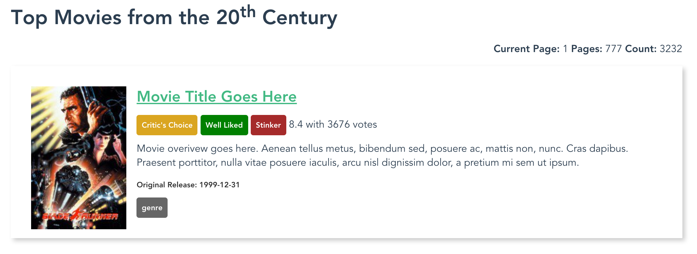
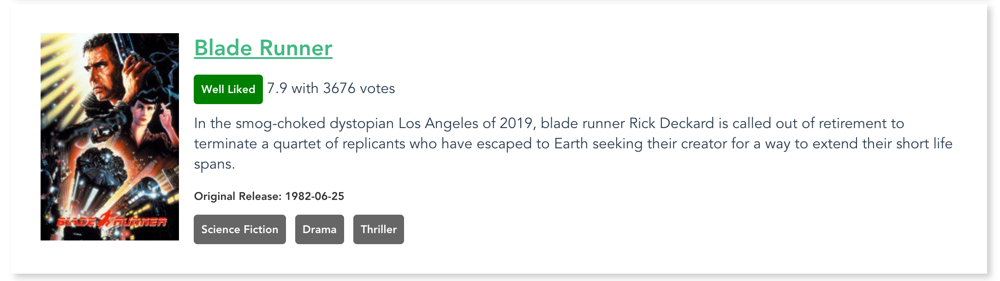

Project: Templating Data
For this project, we will practice with some of the techniques used to output data in the template. We will use the Templates and Data Starter Repository to provide the data and basic application structure for this project.
As usual, the project repository defines a set of requirements that we must fulfill in order to complete this project. It's recommended to read through all of the directions before we begin working, and it might be preferable to work on the project before continuing to read through this section. If you become stuck, a full walkthrough of the project continues below.
As with all of the projects, we should begin by forking the starter repo to our own GitHub account, and then cloning it to our workspace.
Review the Directions and Data
The README.md file for the project outlines the requirements for completion and provides some ideas for how to push the project further if we crave additional challenge. Before we get too deep in working on this challenge, it's worthwhile to review the JSON object in the src/apiresults.js file. This JSON object is a captured result from The Movie Database API. It contains the top 20 movies from the 20th Century, sorted in order of popularity. We can see from the results that there are about 147,445 movies from the 20th Century in the TMDb system, but we are only seeing the top 20 most popular.
In the data we will notice some "metadata" about the search itself: How many total results, what page we're looking at, and how many total pages there are. We can also see an array called results that contains objects representing each of the 20 movies in the list. These objects all have the same data points:
{
"vote_count":3676,
"id":78,
"video":false,
"vote_average":7.9,
"title":"Blade Runner",
"popularity":105.797529,
"poster_path":"/p64TtbZGCElxQHpAMWmDHkWJlH2.jpg",
"original_language":"en",
"original_title":"Blade Runner",
"backdrop_path":"/k36huckDH0v3LP1zo7maFt3mJC0.jpg",
"adult":false,
"overview":"In the smog-choked dystopian Los Angeles of 2019, blade runner Rick Deckard is called out of retirement to terminate a quartet of replicants who have escaped to Earth seeking their creator for a way to extend their short life spans.",
"release_date":"1982-06-25",
"genres":[
"Science Fiction",
"Drama",
"Thriller"
]
}
When we loop through each of the results in our template, each of these data objects will become available to our template. We can rely on each object having these same data points, and we can write our template accordingly. We will need to refer back to these property names so we can be sure to spell and capitalize everything properly.
Working the Project
First, be sure we have run npm install in the project repository to install the application dependencies. When that finishes, we can run npm run dev to run the development server. We should see the beginning template provided in the repository:

Starter template
To begin working the project, we should open up the src/components/Results.vue file. This file contains the template that we need to alter in order to display our work. When we first open the file, we can see that the template is full of static information, and it only shows one movie result. Our goal is to enhance this template to make it dynamic so it can show the full set of data we have in the src/apiresults.js file. This data is revealed to the template context. We will access this data in our template in order to fill in the proper information.
Search Metadata
Most search interfaces provide us with "metadata" about the search itself: How many items were found, how many pages there are, and what page we are currently viewing. This information is present at the top of the JSON object returned by TMDb. We must output the data into the proper area of the template:
<p class="search-meta">
<span class="current-page"><b>Current Page:</b> 1</span>
<span class="total-pages"><b>Pages:</b> 777</span>
<span class="total-results"><b>Count:</b> 3232</span>
</p>
The relevant values in the root of the JSON object are:
"page":1,
"total_results":147445,
"total_pages":7373,
So we can add those values to our template by using basic data interpolation and their property names:
<p class="search-meta">
<span class="current-page"><b>Current Page:</b> {{ page }}</span>
<span class="total-pages"><b>Pages:</b> {{ total_pages }}</span>
<span class="total-results"><b>Count:</b> {{ total_results }}</span>
</p>
This is the basic way we interpolate data into our templates. Since these properties all exist at the root (main level) of the JSON object, we can just use their names to reference them.
Movie Items
The meat of the page is really the movie items themselves. The HTML structure for the movie items has been provided for you: These will be formed by list items (<li> elements) within an unordered list. This is a convenient way to format these elements, and we can add all sorts of HTML elements within each <li> in order to achieve our desired effect.
The overall structure of each movie item is this:
<li class="movie-item">
<img src="https://image.tmdb.org/t/p/w150_and_h225_bestv2/p64TtbZGCElxQHpAMWmDHkWJlH2.jpg" alt="Title of Movie Poster" class="poster-image">
<h2 class="title"><a href="https://www.themoviedb.org/movie/78">Movie Title Goes Here</a></h2>
<div class="ratings">
<span class="rating-category critics-choice">Critic's Choice</span>
<span class="rating-category well-liked">Well Liked</span>
<span class="rating-category stinker">Stinker</span>
<span class="vote-average">8.4</span> with <span class="vote-count">3676</span> votes
</div>
<p class="overview">
Movie overivew goes here. Aenean tellus metus, bibendum sed, posuere ac, mattis non, nunc. Cras dapibus. Praesent porttitor, nulla vitae posuere iaculis, arcu nisl dignissim dolor, a pretium mi sem ut ipsum.
</p>
<p class="release-date">Original Release: 1999-12-31</p>
<ul class="genre-list">
<li>genre</li>
</ul>
</li>
Loop Through the Movies
The first thing we need to do is set up the loop that will loop through all of the movie objects in the results array. To accomplish this, we will use the v-for directive. We will apply this directive to the <li> tag so the <li> and all the elements contained within it will be duplicated for each item in the array. Here is how that v-for directive is written:
<li class="movie-item" v-for="result in results">
On each iteration of the for loop, an item from the results array will be made available as result. This pattern of naming is very common in software development, but it's not the only way to handle it. We could, for example, choose to call each item movie and write: v-for="movie in results". This would be fine from a stylistic point of view, but the important thing to remember is that we are choosing the name we will use to reference the item within the loop, and we must be consistent. For the purposes of this walkthrough, we will use result to reference each item, and we will write our v-for directive as shown above.
Poster Images
The next element we encounter in the template is the <img> tag. This element places an image on the page, and we want to fill in two attributes on the <img> tag with dynamic data. We will need to use v-bind to bind a data value to the attribute. This can look confusing at first, but both of these examples utilize basic JavaScript string concatenation that will become more natural with practice. Here is what the augmented <img> tag should look like:
<img v-bind:src="'https://image.tmdb.org/t/p/w150_and_h225_bestv2'+ result.poster_path" v-bind:alt="result.title + 'Poster'" class="poster-image">
The first v-bind directive is applied to the src attribute. This attribute requires the result.poster_path value to be concatenated with the base URL for the images on TMDb. If this value is not calculated correctly the image will not load. Pay close attention to the way that single quotes are used inside the double quotes defining the attribute value. This is a bit of a weird-looking syntax, but it is commonly used with Vue.js directives.
The second v-bind directive is applied to the alt attribute of the image. This allows us to provide a dynamic value that can be used to describe the image for screen readers. It's crucial to remember that your dynamic data needs to be applied to accessibility features, too.
Title Link
The next element in the template is the title of the movie. Each title should link back to the TMDb page with more information about the film. To accomplish this, we use an <a> tag inside of an <h1> tag. The link must have v-bind applied to the href attribute in order to dynamically build the link to the movie information page. Here is what that looks like:
<h2 class="title"><a v-bind:href="'https://www.themoviedb.org/movie/'+result.id">{{ result.title }}</a></h2>
The v-bind directive is applied to the href attribute. We see a similar single-quote syntax to concatenate the base URL with the result.id value. This forms a link that we can click to visit the TMDb movie information page. Inside the link tags we have interpolated the result.title value. This interpolation is simple, and we can use the basic mustache syntax to make it happen.
Ratings Information
In order to show a more interesting form of ratings information, we want to provide some additional data processing. We can do this right in the template to display an extra badge that shows a general ranking for the movie based on the result.vote_average. If the average score for the movie is over 8, then we want to call it a "Critic's Choice." If it is between 7 and 8, we want to call it "Well Liked." And if it's below 7 we want to call it a "Stinker". It's a harsh system, but movies are a tough business. Feel free to break down those categories further in order to practice more with writing conditionals.
Here is what the finished conditional set looks like:
<div class="ratings">
<span class="rating-category critics-choice" v-if="result.vote_average > 8">Critic's Choice</span>
<span class="rating-category well-liked" v-else-if="(result.vote_average > 7) && (result.vote_average <= 8)">Well Liked</span>
<span class="rating-category stinker" v-else>Stinker</span>
<span class="vote-average">{{ result.vote_average }}</span> with <span class="vote-count">{{ result.vote_count }}</span> votes
</div>
`
For "Critic's Choice" we use the v-if directive with the conditional statement result.vote_average > 8. This is a straightforward conditional statement, and it's written basically the same as we would do it in JavaScript. If the conditional is true, then this <span> will be shown.
The next <span> has a v-else-if directive applied to it. This means that the <span> will be shown if the v-if above it evaluates to false and if the conditional statement (result.vote_average > 7) && (result.vote_average <= 8) evaluates to true. If the score of the movie is between 7 and 8, then this <span> will be shown.
Finally, there is a <span> with a v-else statement. This <span> will only be shown if the two previous conditionals have evaluated to false. The v-else allows us to catch the cases where our other conditionals have failed and provide a solid fallback display of information.
We finish out the reviews section with a simple interpolation of the data for result.vote_average and result.vote_count. This information is helpful to a user who is trying to learn about a movie, so it's worthwhile to output even after we have given our overall recommendation.
We could test these conditionals further by going into the data and altering the scores for some of the movies. In a real-world API request setting we would need to identify movies that fall into each area of the spectrum and then make requests that would pull those films into our display in order to test out our logic.
Movie Overview and Release Date
The next data values we must output are the result.overview and result.release_date. These are simple data interpolations that we can make. Things would be more complicated if HTML were allowed in result.overview, but since TMDb uses plain text in their overviews we don't need to worry about interpolating HTML content. We could enhance the formatting of the release date, too, but this would require the creation of a filter or method to process the data for display.
The simple interpolation looks like this:
<p class="overview">
{{ result.overview }}
</p>
<p class="release-date">Original Release: {{ result.release_date }}</p>
Genre List
The last part of the movie information that we need to output is the genre list. This list is stored in the result.genres array, and we will use another v-for loop (within our original loop) to output this value. Here is what it looks like:
<ul class="genre-list">
<li v-for="genre in result.genres">{{ genre }}</li>
</ul>
This time, we are looping through the array result.genres, and we are calling each item in the array genre as it moves through the loop. The loop is applied, once again, to an <li> element using the v-for directive. Because each item in this array is a simple string value, we can output {{ genre }} directly.
It is very common for data to have properties that contain arrays of items. Those items can be data of any time, from simple Strings, Numbers, and Booleans to more complex Arrays and Objects. It's crucial to become comfortable with looping through different data objects and accessing different types of data when we need it. There are many situations where we can have no idea how many of something might exist, and the only way to display everything is to use a loop.
Wrapping it Up
The final result of all this work is the following finished template:
<template>
<div class="results">
<h1>Top Movies from the 20<sup>th</sup> Century</h1>
<p class="search-meta">
<span class="current-page"><b>Current Page:</b> {{page}}</span>
<span class="total-pages"><b>Pages:</b> {{total_pages}}</span>
<span class="total-results"><b>Count:</b> {{total_results}}</span>
</p>
<ul>
<li class="movie-item" v-for="result in results">
<img v-bind:src="'https://image.tmdb.org/t/p/w150_and_h225_bestv2'+ result.poster_path" v-bind:alt="result.title + 'Poster'" class="poster-image">
<h2 class="title"><a v-bind:href="'https://www.themoviedb.org/movie/'+result.id">{{ result.title }}</a></h2>
<div class="ratings">
<span class="rating-category critics-choice" v-if="result.vote_average > 8">Critic's Choice</span>
<span class="rating-category well-liked" v-else-if="(result.vote_average > 7) && (result.vote_average <= 8)">Well Liked</span>
<span class="rating-category stinker" v-else>Stinker</span>
<span class="vote-average">{{ result.vote_average }}</span> with <span class="vote-count">{{ result.vote_count }}</span> votes
</div>
<p class="overview">
{{ result.overview }}
</p>
<p class="release-date">Original Release: {{ result.release_date }}</p>
<ul class="genre-list">
<li v-for="genre in result.genres">{{ genre }}</li>
</ul>
</li>
</ul>
</div>
</template>
This template should result in a display that looks like this:

Completed movie item display
We should see dynamic data for each movie in our set of results: A unique poster image, the proper title, and all of the other unique data. The link to the TMDb movie info page should work properly, and users should be able to click and discover even more information about the movie.
Build and Deploy
Once we've finished our work, we can build and deploy the project. This project has been configured to build to the docs/ directory, so we can follow the same pattern we used before:
- Execute the
npm run buildcommand to build the files into thedocs/directory. - Commit all of our code.
- Push the code up to GitHub.
- Go into the repository settings and set the GH Pages section to publish from the
docs/directory.
The project should now be up and available to the public through GH Pages.
Stretch Goals
There are many more fun things we can do with this project. The README.md file lists several possible stretch goals:
- Figure out how to apply the "backdrop" image in some appealing way as a background for each movie
- Look up how to write a filter to format the Release Date value and make it look nicer
- Create a better simulation of pagination than the existing metadata at the top of the page
- Alter the base URL of the poster images to pull larger or smaller images (be sure to keep them in proper scale)
- Enhance some of the styles to give this project a nicer visual appeal
- Modify the template to make the ratings information be displayed as a percentage bar (or as a circle diagram, or something else) using a computed value
Much of the information we would need to accomplish these goals is presented in the previous sections of this book. We should feel empowered to explore the Vue.js Guide and other resources to fill in details and discover ideas for accomplishing these goals.
Good luck exploring and have fun pushing this as far as we can!